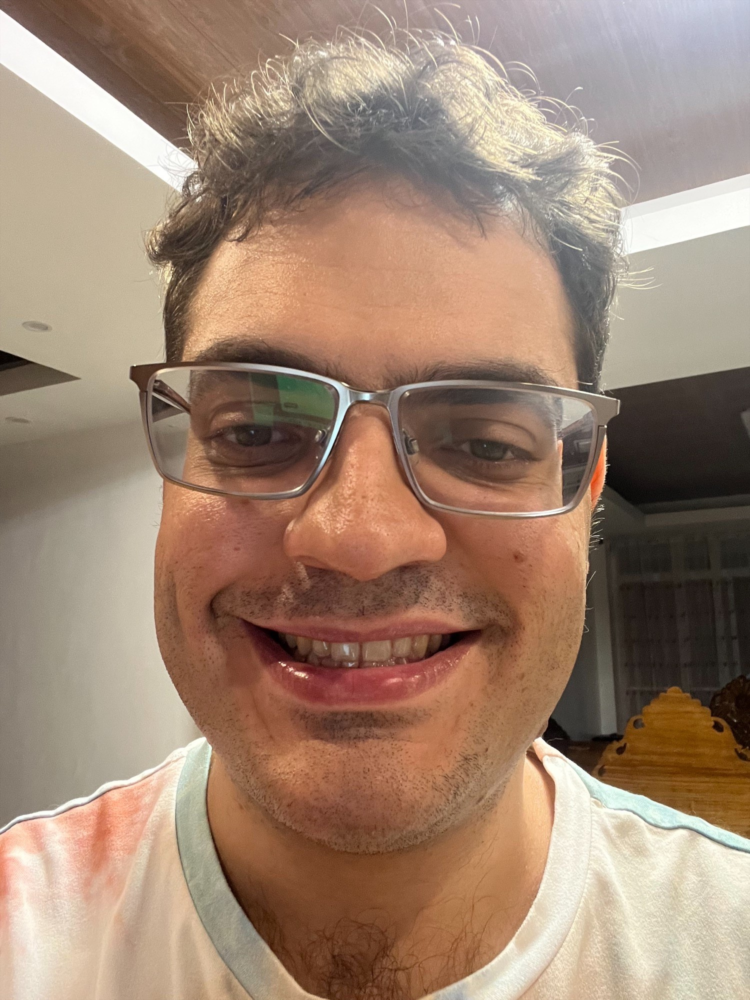
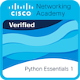

Contact Me
Summary
Highly motivated and enthusiastic up and coming junior web developer with a strong foundation in
HTML, CSS, and JavaScript. Eager to contribute to a dynamic development team and enhance
my skills in front-end and back-end web development.
Education
Pennsylvania State University
- Bachelor's of Science in Computer Science.
- Minor in Mathematics.
Work Experience
Huntington Bank (August 2019- September 2022)
- Relationship Banker I/Customer Experience Banker (August 2020 - September 2022)
- Customer Service Associate (August 2019 - September 2020)
Sherwin Williams (September 2013 - August 2019)
Skills
Tech Skills
- Proficient in HTML, CSS, and Javascript
- Experience with C, C++
- Experience with Java, Object Oriented Programing, and MySQL
- Proficient with basic Python
- Experience using VSCode, Netbeans, Microsoft Visual Studios code editors
Other Skills
- 10 years in customer service roles
- 1 year experience working remotely
- Knowledge of advanced Mathematics
Certificates
- Completed "Python Essentials 1" course offered by the Cisco Network Academy
